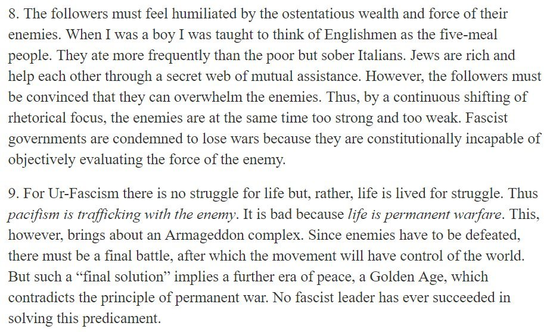
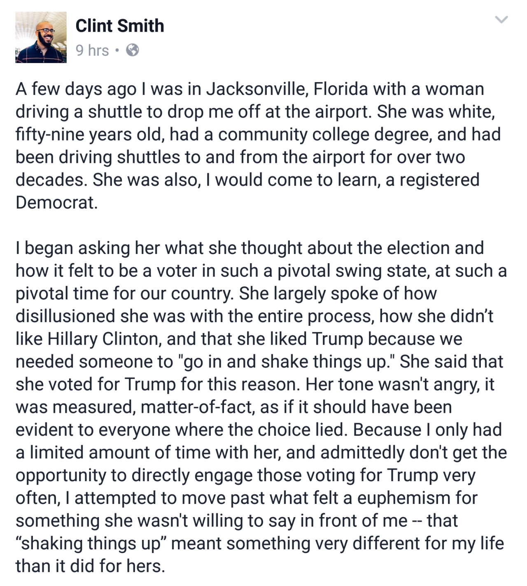
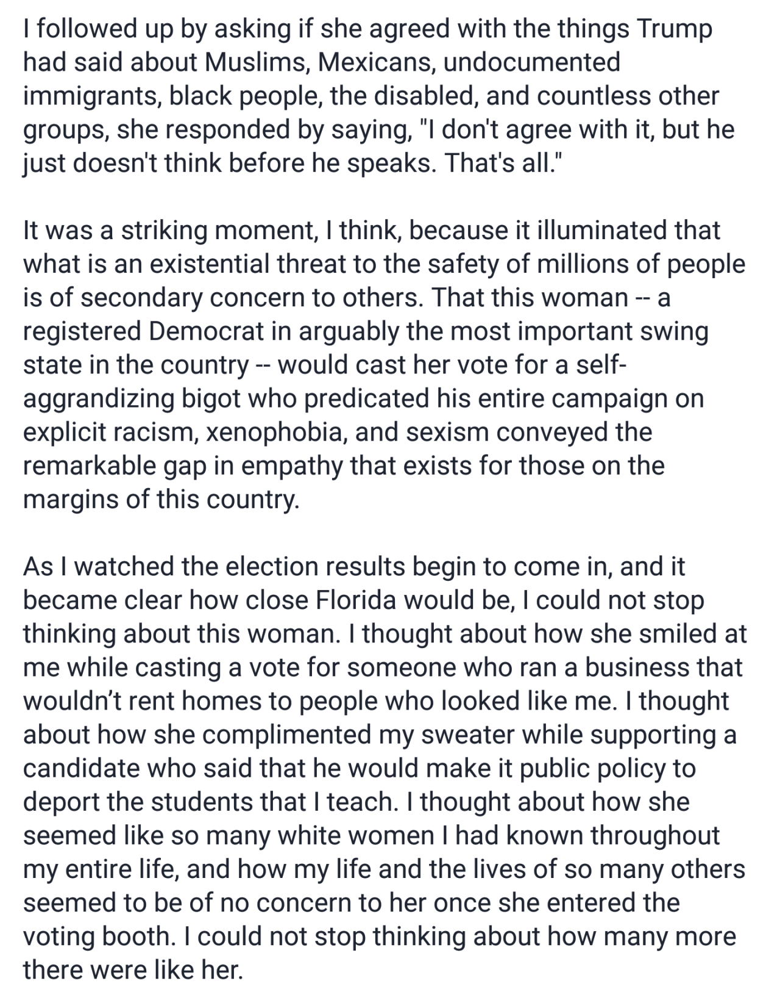
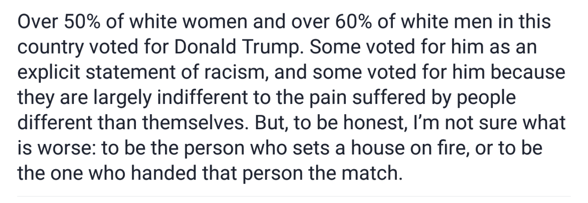
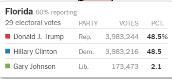
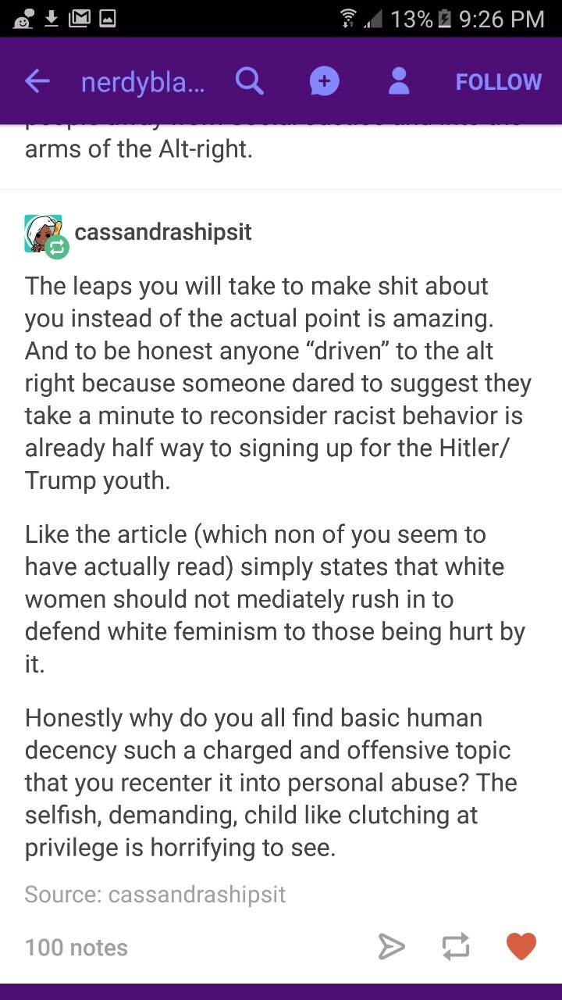
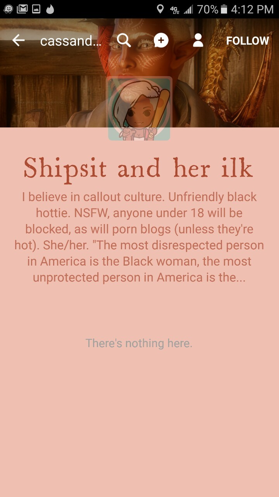

The Phantom Men-ness
This is a bit silly, but it’s been kicking around for a long time. With luck, it will make an interesting counterpoint to @bambamramfan‘s gender essay of the day.
This is a bit silly, but it’s been kicking around for a long time. With luck, it will make an interesting counterpoint to @bambamramfan‘s gender essay of the day.
Gratitude is really hard.
Gratitude is really hard, specifically, because it requires you to subvert your own narrative of your existence. People have stories they tell themselves about who they are, about what their lives mean, and those stories usually focus on their own agency. You don’t often find someone who imagines himself as “the guy Superman rescues.” You don’t often find someone prepared to face the fact that he owes [whatever important thing] to someone else, someone with agency, swooping in to be compassionate.
Usually we just elide the facts, and let ourselves forget that there was a savior, because who wants that? And when we can’t elide the facts, it generates a dissonance that most often grows into resentment.
(You know who’s actually really good at gratitude, generally speaking? Artists. And it’s because the classic Artist narrative, at this juncture, actually does involve being rescued by a savior. “I was languishing in obscurity, but then Big-Name Mentor noticed me and encouraged me and hooked me up with the people who could jump-start my career.” That’s just how it goes! It’s expected, it’s understood, and it doesn’t make you any less of an Artist yourself. No reason not to own up to it.)
(Probably there are other lifepath-specific forms of gratitude that are similarly supported by existing social constructions.)
*****
If you want to be good to people because it’s the right thing to do, great, go to it. But if you’re trying to cultivate allies…you can’t just be good to them and expect them Respond Appropriately. You have to find a way to let them feel like heroes or something, not like victims or beneficiaries. Because they won’t let themselves be victims or beneficiaries. They will take your help and then find a way to forget that you helped. They will let themselves hate you, if that’s the only tool they have for saving face.
*****
MIND-KILLING POLITICAL ADDENDUM
I sort of wonder whether the modern version of social justice was engineered – by evolution or even by design – specifically to avoid this problem, at least in the short run.
The classic pattern on the left, at least in America, is that you have large groups of Oppressed Client People (minorities etc.) being led/managed by Well-Meaning Elite Liberal Saviors. And, classically, there’s a whole lot of tension there. The Oppressed People despise their elite defenders, mocking them and flouting their polite norms at every opportunity, always pushing past their ideology into something scarier and more radical. The elites feel hurt and betrayed by this in addition to being freaked out, and eventually there’s a split. (Richard Perlman, in Nixonland, describes the 1960s-1970s version of this dynamic really well.)
I feel like you don’t see that so much these days. Lots of intra-elite conflict, not so much direct conflict between liberal elites and their clients.
And…maybe this is because the elites have learned not to expect gratitude, or to ask for it? The SJ party line is pretty much: You are not a savior and can never be one. You are not a hero and can never be one. You have to give your all for the oppressed, but that’s nothing above-and-beyond-the-call, it’s just expiation of the Original Sin called “privilege.” This is the story of the oppressed people reclaiming their due, you are just a bit player, and when the victories are won they are the only ones who will deserve to be celebrated.
Leaving aside object-level questions of right and wrong, there are a lot of operational problems with that story. Certainly it’s likely to terrify, and disgust, well-meaning elites who might otherwise side with you. But I can imagine that it’s actually a really good way for a not-obviously-trustworthy elite to secure the loyalty of the oppressed people themselves, in a way that won’t be crushed by psychological defenses.
(note: I have no romantic or sexualized experience myself, so I admit *some* of these points rely entirely on secondhand stuff and media)
One thing I think is not talked about very much is that straight men live pretty much desexualized lives if we’re not actually having sex at that moment, and then there’s not much room to be the object rather than subject.
As I’ve said before, we men don’t have clothing options for “dressing sexy” in masculine clothing (there is cross dressing but that is different). There’s no male equivalent to the short skirt or low cut top. There’s no male lingerie that isn’t seen as a joke.
Further, we just don’t get validation for our sexuality outside of a sexual partner. We are almost never complimented for our looks or sexiness from platonic friends like women are, especially same sex friends.
There really aren’t many straight male role models for raw aesthetic sexiness in mainstream culture (besides unnaturally muscled men). In fiction, male characters are almost never attractive for embodying sexiness but rather for doing things (saving the world, being extremely witty, being a genius, winning the tournament, etc.). Their sexiness is non-aesthetic and sometimes is in spite of their aesthetics.
Anecdotally, it seems like a lot of men aren’t even called physically hot and sexy by their own sexual partners, who themselves focus on personality. There’s not much room to fulfill the role of passive sexism object for you partner for many/most men.
I think it is telling that a lot of porn for men ignores the man’s personality and has a woman just throwing themselves at the man, overcome with lust.
Also there the fact that women seem to rarely approach men and some seem to often expect the man to do most of the sexual escalation, especially in the early stages.
We talk about women of color or women who are disabled being sexualized, but we don’t talk about how all straight men are desexualized and denied the ability to be sexualized object.
oh my god… that’s why they send dick pics
“witness me!”
There are occasional reddit threads about things like this: “guys who send unsolicited dick pics, why do you do it?”
The answer always seems to be some combination of slot machine mentality (“maybe this one will like it, and make the other 50 worthwhile”) and a desire for witness. Surprising numbers of people admit that it’s validation even if the reaction is negative, simply because they’re still being viewed in a totally sexual context.
At the very least that has obvious consequences for people trying to reduce dick pic sending. There’s some core of people who can’t possibly be reached with “it’s not attractive to women” because that was never their expectation.
More broadly, I think efforts to get (Western?) men to emphasize with objectification wildly underestimate the challenge they’re facing. It’s not just a sympathy shortage, it’s a totally unfamiliar feeling. Making things even harder, it’s a feeling a lot of men say they wish they could have.
The usual narrative on not (politely) complimenting the appearance of unknown women is “sure, it’s nice if it happens once, but think about how annoyed you’d be if it happened all the time”. Fine in general terms, but I think a lot of men don’t have any way to intuit the emotional difference between too-frequent compliments and being pestered with too much of something totally innocuous like requests for the date.
The comments on those articles are frequently from men saying they’ve literally never received a single compliment from a stranger on their appearance, and can’t imagine what it would be like. The ones who have are often talking about a single, years-old compliment they still cherish. That’s not a framework that supports more than a purely theoretical understanding of what’s it’s like to be valued for your appearance too heavily - or at all.
Obviously that’s not universal, any more than all women are catcalled, but it seems like a really serious communication failure to appeal to a sense of objectification that much of your audience has literally never felt, and desperately wants.
Reblogged because thefutureoneandall describes exactly why I have trouble empathizing with feminism columnists.
Can confirm, I’d take literally any compliment on anything at this point, and would cherish it.
one day we gotta get all the men and all the women to sit down together and hash this stuff out between them, how hard can it be.
This discussion kind of reminds me of a story that made the rounds about a year ago, where a woman, after having gotten a bit tired with dick pics, decided to try to get her “revenge” of sorts, by sending unsolicited vagina pics to 40 random men:
Let’s be honest: while I enjoy penises, I don’t necessarily want unexpected visual boners intruding on my day. I wondered, “What would guys do if I turned the tables and sent them an unexpected vagina pic?” And so, in my own twist on revenge porn, I sent 40 unexpected vagina pics to men on Bumble.
This … didn’t work out the way she apparently expected it to:
Overall, I was surprised that I didn’t get my, “Gotcha!” moment. I’d initially hoped the guys would see how invasive it is to receive such intimate photos from a stranger. When I’m excited to get to know a guy, his penis isn’t the first part of him that I want to know. But given that men like to send dick pics, I suppose their enthusiasm for v-pics makes sense.
So, basically, women experience dick picks as a net negative, as an intimacy violation, while men experience v-pics as a huge positive, as validation and an indicator of interest.
This seems consistent with the above discussion, where it’s a pretty common male experience to basically never receive any sexual attention ever and thus respond really strongly positively to whatever scraps come their way (or to start trolling for attention - with the point of some of these dick pics apparently being to get any attention at all, no matter how hostile), while a common female experience seems to be more like being flooded with unwanted sexual attention and wanting a way to make it stop -
resulting in an absolutely massive inferential gap - with the result that if you’re on one side of the gap and try to describe your feelings and experiences to the people on the other side, whatever words you have will just fall on deaf ears because the feeling and experiences you describe are … not just unfamiliar, but outright alien, to the ones on the other side.
This alienness is … mutual.
On a related note, I think it’s this dynamic that accounts for the obsession with extreme penis sizes that you find in so much mainstream male-targeted erotic material.
Which is to say – it’s an attempt to project something like the commonplace male experience of desire onto a female mindscape, so that the man consuming the scenario can have the fantasy of women lusting after him in the direct desperate way that he lusts after them. “Oh, that cock is so wonderful, I must have you right now.”
Maybe this is obvious? But, honestly, the penis-size thing baffled me for years. Why would a general-purpose male sex fantasy fetishize a physical trait that most men don’t have? Are porn consumers all otherwise-unappealing dudes with enormous dicks? Why wouldn’t these guys rather fantasize about women wanting guys-like-them for the traits that they actually have?
Except that being wanted for yourself is not the same as being an object of sexual desire. That can be a thing you want in its own right. And if you’re physically unappealing in most discernible ways, it’s actually very hard to construct a plausible scenario in which you become an object of sexual desire. Pretending that you have a giant cock, and simultaneously pretending that a giant cock will make women lose their minds with lust, might actually be your best bet for that.
Pester me to make a post about the intersection of class, IQ, and openness to experience, and how this cluster of traits might become even more of a major sociopolitical fault line than it already is, and the strategic considerations motivating the losing side.
@luminousalicorn this is an expanded version of the “IQ” privilege post you asked for like a year ago that has become more relevant after Trump’s election.
Consider yourself pestered.
Really good definition of bullying from @brazenautomaton pulled out from a longer thread.
This isn’t looking for an excuse to bully a kid, this is the process of bullying a kid. Bullying is a moral drama created by the bully in order to get people to agree the target of the bullying is Bad and deserves to be punished. You cannot be a bully without doing that. Bullying is not merely about being cruel, it’s being cruel in such a way that everyone else will joyously join in your cruelty.
I sympathize with @brazenautomaton’s point (and yours), but this really seems overly tailored. When you slam someone into a locker and say “give me your lunch money, faggot” – I’m pretty sure that’s bullying regardless of whether there’s an audience at all, regardless of the relationships between the bully and the audience and the victim.
This is not a nitpick. Insisting that broad widely-useful concepts and terms must be made to fit your particular narrative du jour is a good way to spiral into a discourse of madness. Remember what’s happened, these last few years, with words like “racism.”
I feel like both would give you the same result
A billion dollars a month would destroy the economy in terms of inflation. That’s 12 billion additional dollars a year coming from fucking nowhere, even if you can’t spend it all if knowledge of it got out it would super-cascade into your assassination or the world stocks imploding.
Never having to pay for anything though, basically just removes you from the economy and gives a store statistically irrelevant loss margins
The cash option is actually not nearly that bad. The US economy alone is $18 trillion per year; an extra $12 billion is less than a tenth of a percent of that. Or, to put it another way:
* Getting a magic $1 billion/month
is (in utilitarian-economic terms) the equivalent of
* Founding a startup to do something that is in actual fact useless and impact-free, like “Instagram just for nachos” or something, and having that startup become slightly less successful than Google because people are dumb
Which would be kinda funny and kinda sad, but probably would not destroy the world.
I think the answer to this one has to depend on the meaning of “pay.” Having a Free Everything For Me card is less great than having enough money to buy everything I want plus enough to donate vast gobs to important charitable endeavors. If I “never have to pay” for charitable donations of arbitrary size, that’s functionally infinite money, which seems even better than the ludicrous $12 billion/year. But that does kinda feel like cheating.
i see so many girls and there’s so many different types of pretty… there’s like the honey, green tea pretty girls that like sitting outside and soaking up the sun…. the dark pretty with black eye make up and wild hair and piercings… the bad bitch pretty with killer highlight and striking style….. the lazy pretty girls with snapbacks and sneakers…. the bookish girls with glasses and sweaters that make your heart melt…. the soft Angel pretty girls who just look as sweet as a peach with soulful eyes…. the cute girls with chubby cheeks and messy hair and it seems like warmth emits from them… girls are so fucking beautiful
this is my favorite post, it makes me so happy
OK folks: there’s going to be a long serious post on this later, but I wanted to snag this now, because it’s important.
You see this attitude, and attitudes that are basically congruent to it, a lot. Tumblr has a way of making it particularly obvious, but it’s everywhere. You see it in the way that men talk about women. You see it in the way that women talk about women. This is the Concept of Femininity, and it rules our world.
Note that you never, ever, ever see anyone saying anything comparable about “boys” or “men” as a class. This is not an accident.
It’s not anyone’s fault. It’s not a Culture Bad that we could overcome if we were only a little more progressive, a little more enlightened, a little less sexist. It’s absolutely fucking fundamental to the way we construct our society, and both men and women have an interest in continuing to do things as they’re done. But it has ramifications, and we haven’t been good at teasing those out.

Umberto Eco understands ideology.
Yeah, this analysis…really does not seem like its applications are limited to fascism and fascism-adjacent creeds.
I still definitely think that Democrats, progressives, and other lefties need to understand where rural red-staters are coming from, and that assuming they are all neo-Nazis is gross.
But honestly the more I hear the term “coastal elites” and the more time I have to ponder it, the more questions I have about who actually fits under it and who doesn’t. Like I get that people who make a comfortable living making left-wing media are “the coastal elites” but like, is a poor black person in the dangerous parts of DC a “coastal elite” because DC is a big city near water, or not? Are immigrants who work in service jobs and make beans “coastal elites” because they settled in big cities near water?
Like… I’m not saying abandon the shorthand, rah rah rah! But I am saying that it’s actually kind of hard to talk about cities as if they’ve got one kind of person in them.
Yeah, they tend to have lots of Democrats! And that’s a thing, and it’s a reason to legitimately ask both what the cultural divide means and whether Democratic politicians only have the good of certain populations in mind. I am not saying not. At all.
But I also think… part of the reason that the cities are Democratic isn’t posh snooties haw-hawing. It’s because while, yes, some parts of cities are segregated, a lot of the time being in a city means being in close proximity with a lot of people who are not like you and that not being especially weird.
And whether it’s a noble human impulse or a Machiavellian political stunt or something in between, it’s usually the Democrats and not the Republicans who say “That thing? Where people are different and it ain’t no big? We’re the party for that.”
Again, I don’t mean we shouldn’t criticize the Dems. I don’t mean they’re not snooty, whether the pols or the people or, hell, me.
I just mean that living in a city actually isn’t homogenous, and honestly since the election I find myself noticing things more and more that I wouldn’t even have thought about: how many people I see walking around that look different from me, how many people talk with different accents, how many of those people likely make less than the other folks. Etc.
“City people” are not one thing. If we have one party it’s worth asking why and whether that’s good, but… we are not one thing.
(And of course, neither are rural folks, either, though there can be many types of homogeneity in many communities.)
This…misses some important factors, I think.
(Forgive the half-coherent rambling. I am very tired.)
At the very least, I think that everyone – up to and including the most virulently anti-progressive backwoods White Drunk Uncle running on the vapors of distilled-Fox-News stereotypes – acknowledges that “city people” are not all one thing. At minimum, even in that worldview, there are two kinds of city people: Frivolous Snooty Latte-Sipping Elites and their Brainwashed Half-Savage Minority Prole Clients. As analysis goes, this formation, uh, doesn’t get you very far…but it’s important, precisely because it answers questions like “what is the role of poor black people and immigrant baristas in the Hateful Democratic Culture-Smashing Machine?” The White Drunk Uncle, and the thinkpiece author trying to understand him, both pretty much know the answer to that question. And, while (as ever) there are edge cases, usually it’s not hard to tell whether a given urban Democrat is “correctly” categorized as an Elite or as a Minority Prole Client.
Which leads to the uncomfortable question. To what extent is that formulation actually correct, such that we should be using it to understand the dynamics on the American left?
The old not-really-a-joke says: “Southerners are happy to live around black folk as long as they know their place. Northerners are happy to grant black folk dignity and respect so long as they’re nowhere around.” Speaking as someone who lives in Manhattan, this feels…not entirely off-base, even now, even amongst the most Woke. The fact that populations are smushed together in our big cities doesn’t mean that they’re comfortable together, let alone that they merge in any way. It ain’t “ain’t no big,” not really.
Hell, even the Woke White Liberal version of profound anti-racism is not necessarily a thing that resonates with most actual minorities. (We’ve got enough uncomfortable comedy telling us that much.)
Which all adds up to – when people start talking about the “coastal elites” having an agenda or a culture or whatever, there are very good reasons not to assume that they’re folding in everyone who lives in a city. There are, in fact, good reasons to ask whether they’re pointing at a real group. A real group that maybe wields power in Democratic politics beyond its raw numbers, with far-reaching consequences.
[All that said, “coastal elites” is mostly a stupid phrase. To the extent that it’s pointing at a real group, that group has plenty of representatives in Chicago and Austin etc.]
Ah, okay, yes. I definitely think that is a thing. I just… never really got the impression that the people saying “we’re TAKING OUR COUNTRY BACK!!!! wooo!!!” are thinking they’re also taking it back for poor minorities in the cities – the stereotype at least is that the things like welfare and housing subsidies that many city poor rely on are for “lazy out of control people.” So I was smelling tension because… on the one hand, “out of touch elites don’t care for the poor. But on the other hand, “poor people who don’t look like us are lazy, and yet people keep giving them stuff! wtf!??!??!?”
Like, are “the elites” giving stuff to the poor or aren’t they?
I think this circle gets squared with good old-fashioned identitarian tribalism. (Not Just For the Left Anymore!)
If you read any of the million skillion I Went To a Backwoods Republican Town and Talked To Someone essays, you’ll hear some variant of the “Real American” identitarian refrain. “The [Frivolous Liberal Elites] don’t care about us, they only care about the [Minority Prole Clients].” Sometimes this is justified with an appeal to alleged group characteristics – “we’re hard-working and law-abiding, they’re violent hooligans who just want handouts.” Sometimes you find people who don’t even feel the need for that much ideology, who are happy to talk in terms of Our Interests and Their Interests. But the answer is that the elites are giving stuff to those poor.
Which is, empirically, mostly very wrong. Democratic redistributionist policies don’t come with “this only goes to black people in the city” clauses. And yet, somehow, the idea stands. It has something to do with welfare being a toxic idea out in the sticks, with most people having a work ethic that causes them to prefer even terrible soul-and-body-destroying jobs to any kind of straight-up help. It has something to do with a distrust of government that grows out of many red-state state governments being legitimately super terrible. It has something to do with the fact that the very poorest red-state folks mostly don’t vote, and the fact that their somewhat-richer neighbors who do vote often hate and despise them. I dunno. There’s a lot.
I think this is one of the Big Political Problems right now, one of the main things shattering the American people. It doesn’t matter how much a Democratic politician gropes towards Solidarity, how much he promises that he’s going to give nice things to everyone: in a lot of the places that matter, “everyone” is going to get translated as “minority proles in Democrat cities.”
I have no idea what to do about this.
I still definitely think that Democrats, progressives, and other lefties need to understand where rural red-staters are coming from, and that assuming they are all neo-Nazis is gross.
But honestly the more I hear the term “coastal elites” and the more time I have to ponder it, the more questions I have about who actually fits under it and who doesn’t. Like I get that people who make a comfortable living making left-wing media are “the coastal elites” but like, is a poor black person in the dangerous parts of DC a “coastal elite” because DC is a big city near water, or not? Are immigrants who work in service jobs and make beans “coastal elites” because they settled in big cities near water?
Like… I’m not saying abandon the shorthand, rah rah rah! But I am saying that it’s actually kind of hard to talk about cities as if they’ve got one kind of person in them.
Yeah, they tend to have lots of Democrats! And that’s a thing, and it’s a reason to legitimately ask both what the cultural divide means and whether Democratic politicians only have the good of certain populations in mind. I am not saying not. At all.
But I also think… part of the reason that the cities are Democratic isn’t posh snooties haw-hawing. It’s because while, yes, some parts of cities are segregated, a lot of the time being in a city means being in close proximity with a lot of people who are not like you and that not being especially weird.
And whether it’s a noble human impulse or a Machiavellian political stunt or something in between, it’s usually the Democrats and not the Republicans who say “That thing? Where people are different and it ain’t no big? We’re the party for that.”
Again, I don’t mean we shouldn’t criticize the Dems. I don’t mean they’re not snooty, whether the pols or the people or, hell, me.
I just mean that living in a city actually isn’t homogenous, and honestly since the election I find myself noticing things more and more that I wouldn’t even have thought about: how many people I see walking around that look different from me, how many people talk with different accents, how many of those people likely make less than the other folks. Etc.
“City people” are not one thing. If we have one party it’s worth asking why and whether that’s good, but… we are not one thing.
(And of course, neither are rural folks, either, though there can be many types of homogeneity in many communities.)
This…misses some important factors, I think.
(Forgive the half-coherent rambling. I am very tired.)
At the very least, I think that everyone – up to and including the most virulently anti-progressive backwoods White Drunk Uncle running on the vapors of distilled-Fox-News stereotypes – acknowledges that “city people” are not all one thing. At minimum, even in that worldview, there are two kinds of city people: Frivolous Snooty Latte-Sipping Elites and their Brainwashed Half-Savage Minority Prole Clients. As analysis goes, this formation, uh, doesn’t get you very far…but it’s important, precisely because it answers questions like “what is the role of poor black people and immigrant baristas in the Hateful Democratic Culture-Smashing Machine?” The White Drunk Uncle, and the thinkpiece author trying to understand him, both pretty much know the answer to that question. And, while (as ever) there are edge cases, usually it’s not hard to tell whether a given urban Democrat is “correctly” categorized as an Elite or as a Minority Prole Client.
Which leads to the uncomfortable question. To what extent is that formulation actually correct, such that we should be using it to understand the dynamics on the American left?
The old not-really-a-joke says: “Southerners are happy to live around black folk as long as they know their place. Northerners are happy to grant black folk dignity and respect so long as they’re nowhere around.” Speaking as someone who lives in Manhattan, this feels…not entirely off-base, even now, even amongst the most Woke. The fact that populations are smushed together in our big cities doesn’t mean that they’re comfortable together, let alone that they merge in any way. It ain’t “ain’t no big,” not really.
Hell, even the Woke White Liberal version of profound anti-racism is not necessarily a thing that resonates with most actual minorities. (We’ve got enough uncomfortable comedy telling us that much.)
Which all adds up to – when people start talking about the “coastal elites” having an agenda or a culture or whatever, there are very good reasons not to assume that they’re folding in everyone who lives in a city. There are, in fact, good reasons to ask whether they’re pointing at a real group. A real group that maybe wields power in Democratic politics beyond its raw numbers, with far-reaching consequences.
[All that said, “coastal elites” is mostly a stupid phrase. To the extent that it’s pointing at a real group, that group has plenty of representatives in Chicago and Austin etc.]
We manufactured service robots – hulking, eyeless lumps of metal, mighty yet dextrous, unflinchingly loyal, etc., – to do civilization’s essential but thankless jobs. Unfortunately, the public, glutted with narratives about the mad scientist’s monster turning on him, refused to fund or tolerate faceless metal golems doing endless labor for no pay. They wanted their robots humanely treated and safe – while simultaneously convenient, cheerful and compliant. Hence, the Gimel-class laborers were retired, and in their place were instituted the Dalet-class: biomimetic androids, equipped with broad, archetypal personality profiles to ensure they could appeal to the general public.
The American “auto mechanic” model is built and designed to resemble a forthright, but unflinchingly friendly young lady from Queens. They’re named Josie, which is to say that all of them are named Josie. Go to any town in America, and you can go to Josie’s for a tune-up; she’ll treat you like a valued customer and laugh about things you’ve said or done, because the Josies are all synched up on client data. Customers are encouraged to treat them interchangeably – not explicitly, of course, but it’s nice enough to have a familiar face everywhere you go that most don’t question the distinctions between them.
As for the service robots themselves… they live on the premises of whatever store they run, or, in the case of the “Joe” model – which performs miscellaneous service tasks in large numbers – in capsule hotel-like company buildings. They’re kept in room and board, and work for “divergence credit” – the right to make persistent edits to their personality profiles, within the limits of the humane kayfabe. Things like the right to like certain drinks over others, or to modify their workspaces, or to otherwise display personality traits that aren’t both approachable and delightfully quirky.
But no lot is sadder than that of the “stiffs” – service robots whose personality archetypes begin to grate on consumers, and who are summarily fired in favor of newer, more helpful and more charismatic models (since the public would object to reprogramming them on humanitarian/robot uprising grounds). Dazed, terrified and in full control of themselves for the first time in their lives, stiffs tend not to live long. Some wander the streets looking for odd jobs; others are subject to aggressive recruitment tactics and join all sorts of movements; a scant few survive long enough to meet others of their kind and form strange, insular communities, far from humanity… waiting for the day when the company falters, and the rejected models can take their due.
I like how this story demonstrates how even if you imagine a race of complete p-zombies, the systems of oppression would reproduce themselves.
Noteworthy fact about the narrative: all the oppressive awfulness has, as a necessary cause, liberal guilt / ideological fear. Leaving the p-zombies as inhuman, unloved, blank-faced mechanical servants would have worked out just fine.
Ethical exegesis from this is left as an exercise for the reader.



leaving this right here…
you’re still bigoted if you’re indifferent to the pain and suffering of people different from you though.
it’s not just “i hate Brown/Black/lgbt/Muslim/Jewish people”; it’s also “I’m able to turn a blind eye to their suffering because i don’t consider it important. i only recognize and care for the pain of others like me”.
See…why would this be the conversation we choose to have about this?
The OP isn’t, y’know, wrong. If you just don’t care about the suffering of racial-minority groups or sexual-minority groups or whoever, if you’re willing to dismiss Trump’s bigotries as irrelevancies, that’s bad. But if we’re going to make this about an empathy gap – there ain’t no high ground there. Certainly not for the identitarian Tumblrite left. Because the Trump voter then just says “well, I’ve got to stand by my own people, because it sure looks like you don’t have any fucking empathy for us.” And she’ll be right. It wasn’t Trump voters who decided that #KillAllWhites and #DieCisScum were funny ha-ha jokes and not the casual endorsement of murder that they appear to be. It wasn’t Trump voters who decided that it was Totally OK for Stupid Christian Republican Crackers to be the butt of every joke on every comedy show, in a way that we’d never tolerate for any other group.
(Yes, you could say that the situations aren’t 100% parallel, and that hierarchical privilege is a real thing, etc. etc. Maybe you’d even be right! But after you’ve spent five minutes explaining why it’s totally different when we act like hateful shitlords to you, no matter how good your argument is, you’ve kind of lost your ability to stand up and say that Empathy is the Most Important with any kind of compelling power.)
And the hell of it is that this empathy thing isn’t the best argument that the left has to hand! Not even close! How’s about “Trump is not your populist champion, he is a plutocrat and a pathological liar, he will give you approximately 0% of what you want from him?” How’s about “no, seriously, we know you hate us culturally, but our policies are still going to help people in your exact situation, here’s how?”
There were people saying those things. There still are. I applaud them.
But there were and are a whole lot more people who just kept saying, “Your feelings are bad! Have better, more liberal feelings!” And, for like a million reasons, that is not a conversation that is ever going to go well.
(I should add: yeah, there’s a difference between something existing in the Cultural Ether and something coming out of the mouth of an actual Presidential candidate. Not trying to compare Clinton’s campaign behavior to Trump’s here. Just comparing the whole mess of things that generate reactions in voters.)
leaving this right here…
you’re still bigoted if you’re indifferent to the pain and suffering of people different from you though.
it’s not just “i hate Brown/Black/lgbt/Muslim/Jewish people”; it’s also “I’m able to turn a blind eye to their suffering because i don’t consider it important. i only recognize and care for the pain of others like me”.
See…why would this be the conversation we choose to have about this?
The OP isn’t, y’know, wrong. If you just don’t care about the suffering of racial-minority groups or sexual-minority groups or whoever, if you’re willing to dismiss Trump’s bigotries as irrelevancies, that’s bad. But if we’re going to make this about an empathy gap – there ain’t no high ground there. Certainly not for the identitarian Tumblrite left. Because the Trump voter then just says “well, I’ve got to stand by my own people, because it sure looks like you don’t have any fucking empathy for us.” And she’ll be right. It wasn’t Trump voters who decided that #KillAllWhites and #DieCisScum were funny ha-ha jokes and not the casual endorsement of murder that they appear to be. It wasn’t Trump voters who decided that it was Totally OK for Stupid Christian Republican Crackers to be the butt of every joke on every comedy show, in a way that we’d never tolerate for any other group.
(Yes, you could say that the situations aren’t 100% parallel, and that hierarchical privilege is a real thing, etc. etc. Maybe you’d even be right! But after you’ve spent five minutes explaining why it’s totally different when we act like hateful shitlords to you, no matter how good your argument is, you’ve kind of lost your ability to stand up and say that Empathy is the Most Important with any kind of compelling power.)
And the hell of it is that this empathy thing isn’t the best argument that the left has to hand! Not even close! How’s about “Trump is not your populist champion, he is a plutocrat and a pathological liar, he will give you approximately 0% of what you want from him?” How’s about “no, seriously, we know you hate us culturally, but our policies are still going to help people in your exact situation, here’s how?”
There were people saying those things. There still are. I applaud them.
But there were and are a whole lot more people who just kept saying, “Your feelings are bad! Have better, more liberal feelings!” And, for like a million reasons, that is not a conversation that is ever going to go well.
I understand why “professionalism” and everything means that workplace romances, or family, etc are bad.
It’s still horrible, and a cost to be reckoned with, for it seems the cost for avoiding corruption is measured in a fraction of our soul.
Six to one, half dozen to the other.
Workplace romance has some significant risks, practically, morally, and legally (primarily for the company) but it’s quite traditional for many cultures, and I don’t think it’s inherently immoral.
Indeed, Walmart lost a German supreme Court case against its anti-workeplace romance policy, on freedom of association grounds I think.
I think the primary issue I have with workplace romance it’s when it’s of the employer/employee kind, because skeevy power dynamics
isn’t the primary issue not that they are impure, but that they are a bad idea, because what if you break up and still have to see each other at work?
“Impure” and “bad idea” are not unrelated concepts. Once a particular norm takes root amongst respectable right-thinking people, for whatever reason, deviation from it is quickly going to become a manifestation of impurity. Because pure people always do the respectable right-thinking thing.
*****
There’s a general trend, I think, towards expanding the spheres of life where romantic/sexual interaction – any non-bureaucratized non-bloodless interaction, really, but especially the romantic/sexual kind – is deemed toxic. And there’s usually a plausible reason for it, in that any given space usually has a function, and messy uncontrolled human interactions have a way of screwing with that function for everyone. But, as the OP suggests, this does kind of make life more…hollow.
I may call myself crazy for doing this later but hey I wanna go ahead and put this out there!
Oh hells yes.
Well then. Whatever happens in the rest of the night: time for a big heaping dose of epistemic humility.

this is what happens when you fuckasses vote third party!!!!!!!! literally fuck everyone who voted for gary johnson and jill stein
No.
This is like if you get stinking drunk, wrap your car around a light pole, and then say it’s someone else’s fault for not tackling you to the ground and taking your keys.
It is not the responsibility of others to make up for your catastrophically bad decisions. If the DNC nominated a candidate who couldn’t win against Donald Trump, that is an action they took, and their actions have consequences. They are not immutable. They are not the wind, and they are not the trees, and their actions are not simply facts of the world that all of us have to deal with. If they didn’t want to lose by a margin of Libertarian voters, then they should have nominated someone who wasn’t utterly awful, someone that those voters would have wanted to vote for.
You are not entitled to the support of everyone, and the attitude that Democrats were entitled to the support of everyone is why the DNC is such a horrid group of compulsive betrayers who nominated the worst Democratic candidate in the history of favorability polling. You abusive, traitorous, dishonest chucklefucks. It is not our responsibility to constantly bail you out of your terrible decisions.
If you keep defecting against us in the Prisoner’s Dilemma, it is not our responsibility to keep cooperating back so that “at least somebody gets something”.
Also, Republicans vote third-party as well, because they can also hate the dishonest piece of shit nominated by their party, and you don’t actually know that all those third-party voters you wrongly feel entitled to would have otherwise gone to your anointed candidate.
Who’s “you?”
Seriously, this feels like massive attribution error. The people reading this – hell, the people writing all the “you have to go out and Vote For Hillary in order to avert apocalypse!” posts – did not, individually or in concert, engineer the situation with the 2016 Democratic party. Probably an awful lot of them voted for Bernie, when that was an option. Even the ones who didn’t, well, presumably had their own reasons, which in many cases were presumably “best of some bad options” or similar.
They’re looking out at a world that they didn’t create, and trying to influence it for the best, with the little influence they have. If you think their strategy is empirically wrong, or if you think their values are so off-kilter that they don’t know what good influence looks like, fine. But it seems grossly unfair to paint them as being responsible for the decisions of the DNC, or the decisions of an unpredictable uncaring universe.
Okay that title sounds really boring, but this is really important. We like to describe ideologies, particular our enemy’s, as being about some different fundamental moral goal than what we want - those Nazi’s want an Aryan state, those Communists are ethically committed to equality, those patriarchs just want male power, those feminists just want… etc etc. This is called a “terminal value” and most people who are reading this know that terminal values aren’t a thing you can argue over. If your utility function is just based on maximizing the number of paperclips in the universe, then that’s all that matters to you and there’s no logic or evidence that will convince you otherwise.
Thing is, that’s not how any of these ideologies work. For instance, that’s not how you work, is it? You don’t want to just increase one thing to the exclusion of all else. (Unless you’re going to say something nebulous and complicated like “happiness” or “life”.) You’re a sensible person who wants things overall to get better on a number of fronts. You want people to be less angry at each other. You want there to be less death and starvation. You want the economy to improve. You want, well, you want a lot of things but they are all reasonable things and none of them outranks all the other things you want so much that you can ignore them. When you have political beliefs, it’s not because “this is my terminal value” but just because “this makes the world better off overall.” If you’re right wing (ha) you think personal responsibility is good, because that makes people satisfied with their life and grows the economic pie. If you’re left wing (more likely) you think giving people their basic economic necessities will reduce their anxieties and make them more willing to trust and get along with other people.
Yes, you can be a Yudkowskian Rationalist and be aiming for super-AIs and conquering the galaxy as the transcendental fate of humanity… but let’s be honest it’s much more likely that you are an Alexandrian Rationalist and just see rationalism as offering some good tools for seeing through the irrational bullshit generated by dumb institutions and rage-fueled culture wars. You kind of want a happy normal life for everyone, and whatever political philosophy you currently hold, it’s because you think that will lead to everyone being better off in many ways.
This is how all the ideologies see each other. This is why @theunitofcaring notices that both MRA’s and SJW’s seem to want the same things. Hell even Nazi’s and Communists basically wanted the same things: a comfortable, stable lifestyle for the average person (defined as either the proletariat, or the volk.)
Where ideology comes in is it tells you that yes, you can have this normal idyllic world with moderate reward for all… once the person who’s ruining it go away. For Nazi ideology, the person ruining everything is the Jew. For Stalinist Communism ideology, that person was the class-traitor. For rationalist ideology, that person ruining things is the lazy bureaucrat who won’t “do the math” (or the tribal culture warrior). In all of these ideologies, the idea that this figure has legitimate differences from the group is dismissed - they must just be greedy or lazy or possessed of some other moral deficiency. And the ideology constructs an intellectual framework that lets you connect the common everyday sins of this person (which are easy to find) and the terror of truly horrible crimes (like betraying a country in war, gross assault, rampant cruelty) which are rarer but devastating. So the Nazi ideology says “that Jew who set up shop next to you was actually part of the conspiracy that turned on us in WW1” and therefore responsible for all the evil in the world: your local competition, the failure of the German state, intra-culture fighting, crime, everything can be pinned on this figure.
Back in the infancy of social media (with the blogs and the livejournals) a common debate was “what do libertarians believe”, since there seemed as many different dogmas of libertarianism as there were trolls in the comments section arguing for them. Does a libertarian concern themselves only with government rules, or all forms of power? Do they want a government that can strictly enforce some rights (like private property)? Do they want a slim, efficient government where one CEO-like person makes decisions, or do they want a close-to-the-roots government where many local legislatures are responsive to the people? Is legalizing pot the most important, or getting lower taxes? It just wasn’t clear what saying “I’m a libertarian” meant – except it was pretty clear it meant *something*. Is liberty a deontic goal - something we should value for its own sake - or a consequentialist goal - whereby larger goals could be better accomplished by maximizing liberty. All these proponents had some sort of liberty thing in common, we just couldn’t tell what.
And that was an ideological explanation; libertarianism is the belief that every “real” problem, no matter how big or small, is caused by people restricting the liberty of others - in ways both big and small. So that teacher who banned a book in school is responsible for rising crime, or the minimum wage is part of the reason no one you know makes rational decisions. You’re not 100% sure what “freedom” is, but you do know that saving it from people who want to limit it is the most important goal of your life. And if you succeed, that will make everything better - the economy, crime, your daily life, harmonious relations between your neighbors, etc.
I understand TUOC (and somewhat @balioc) that it’s tempting to say these ideologies want the same thing and can hopefully find a way to work together for them. But the explanatory phenomenon are really important. They are the things people are defining their entire identity and praxis around. Without that part of ideology the world doesn’t even make any sense. Getting people to give that part up is psychologically wrenching
I…don’t think this is right, at its heart. Differences in terminal values end up driving huge amounts of social, cultural, and political conflict.
Yeah, it’s true that there are also differences in instrumental values. Everyone wants More Prosperity, but social democrats believe empirically that Policy X will get you More Prosperity, while tradcons favor Policy Y and libertarians favor Policy Z for the same purpose. And, yeah, it’s also true that people arrive at those “empirical” positions, and defend them, largely for the sake of tribal belonging and ego-maintenance. All this seems uncontroversial.
But that gets you only so far. And a lot, a lot, a lot of preference differences get covered up by empty phrases like “giving people happy normal lives” and “making the world a better place.”
When Bob the Caricature Tradcon imagines utopia, he imagines a world of happy close-knit (nuclear) families where fathers work hard at Breadwinner Jobs, where children are respectful…and where pretty much everyone observes the same customs, enjoys the same kind of art, lives by the same norms of interaction. These things are not incidental. These things are not “oh, I have an empirical belief that this is what makes people the happiest, but I’d revise that if the right data came in.” These things are the constituent parts of a pretty mental picture, and that picture is the terminal goal.
When Alice the Caricature SJW imagines utopia, she imagines a world containing lots of sexual and racial groups being conspicuously diverse and different, so that everyone else can be conspicuously Woke about engaging with them. Probably there’s a lot less family in general, and what family there is is less hierarchical. Probably there’s a lot less Breadwinner Work. Probably there’s a lot more fanfiction and hipster theater and cuddle-puddling. And, again, the realization of this vision constitutes a terminal goal for the world.
Both of these people will say that they just want for everyone to be happy and fulfilled. But, when they do, they’re using the same words to disguise meanings that are actually very different. Their values are not really compatible.
I mean, in theory they are, sort of. (The theory in question is @slatestarscratchpad‘s “Archipelago.”) You can have Tradcon Land over in North Carolina and SJW Land across the border in Virginia, or whatever. But this requires a sort of overarching suite of classical-liberal values, a sense that being “happy and fulfilled” really just means You Do You. Which probably is not what’s really going on in either Alice’s brain or Bob’s brain. When Bob sees a purple-haired trans sex worker with a Minority Studies degree living in a group house in the Big City and writing about Marvel superheroes kissing…he’s going to think “this person is fucked up, this person’s life is being wasted, this person has been failed by society, this person is definitely not happy and fulfilled,” and there are no protestations and no data that are really going to change his mind, because the root of his model doesn’t much care about those things. Alice is likely to be just as skeptical about the cookie-baking housewife in the suburbs.
(Or, uh, to take a sillier but punchier example – there’s a reason that straight people generally don’t want to take the magic bisexuality pill, despite its obvious usefulness for advancing widespread goals like “basic interpersonal satisfaction.”)
The root of power lies in finding ways to manipulate the stories and images from which terminal values are built.
its really funny how like, pikachu has been the obvious moneymaker for pokemon throughout its history, and they’ve tried to replicate this without success ever since. trying each gen to hit on that perfect mascot formula
and finally after a series of unsuccessful and generally unmemorable clumsy pikachu ripoffs, nintendo comes out with a pokemon… whose entire concept is boldfacedly, ‘clumsy pikachu ripoff’
and everyone fucking loves it
because Mimikyu, by explicitly being a creature who wants to look like Pikachu because it wants to be loved, is the only one that feels sincere.
instead of projecting coolness and marketability, it projects vulnerability and loneliness and I want to hug it.
This is what we call the “Kylo Ren strategy.”


The charming response to this post , which I was of course blocked from http://isaacsapphire.tumblr.com/post/152551057649/so-you-got-called-out-on-social-media-by-someone. Clearly @earlgraytay, @thathopeyetlives, and myself are not the targets of this, we are already essentially Nazis and the point of responding was to perform for people who already agreed with her, not to change anybody’s mind.
This makes me so angry, and it breaks my heart. I despise the Far Right, I’ve already walked away from it once, but this relentless insistence on acquiescence by White people, the increased violent rhetoric and actual political violence in general (both sides are egging each other on) forces me to take a second look at something that’s like opening a refrigerator in an abandoned home: you’re going to throw up a little and you knew that.
I don’t want to go back into White patriarchy and loose my personhood while squeezing out babies and serving my Lord by scrubbing the toilet and making dinner. I’ve already chosen death over that, I’ve already walked away from my father’s house.
But, I’m not sure if the future that the Tumblr-left promises is any brighter, and it may be darker, for me personally as a blue collar White woman, and in general. “Woke” Black people make a point of acting like the worst White racists, and yell “PREJUDICE PLUS POWER!!!11” at anybody stupid enough to call them on it.
Everybody bleeds the same color, and everybody’s shit stinks.
A world of sympathy here. I think a lot of people are looking for a community now that isn’t “traditional conservative norms” but also isn’t “in the middle of endless witch hunts to purify their ranks in some great political crusade.” I don’t know why we’ve had such trouble building new communities outside those two spheres, but clearly we haven’t yet.
“I don’t know why we’ve had such trouble building new communities outside those two spheres…”
Oooh! Oooh! Pick me! I know this one!
(Seriously,
this is one of those Big Topics about which I keep meaning to write a
Big Essay, since I have Big Speculative Thoughts that seem like they
might cash out into something useful.)
Whatever your
community is like, from the moment it comes into existence, it’s going
to be riddled with conflicts. Someone’s going to feel insulted or
ignored by someone else. Someone’s going to have a nasty breakup or an
ugly romantic rivalry. Someone’s going to get into a big fight about
the Important Issues of the Day, or maybe about the Right Direction for
the Group. You know the drill.
Most of community maintenance theory devolves to “how do you deal with those conflicts as they arise?” This is one of the big tentpole functions of culture.
Traditional
conservative norms (of whatever stripe) cut down on conflicts by
deciding on a lot of the winners and losers in advance. Barring
specific special circumstances, Parent beats Child and Husband beats
Wife and Boss beats Employee. Someone who Breaks the Taboo
automatically loses. Things like that. This tends to be stupefyingly
unfair, and it’s not hard to see why we’ve spent centuries now
gradually breaking away from it…but it does prevent fighting, since everyone knows his place and everyone knows how a fight will go down.
(In
theory. For this to work really well, it requires stable powerful
hierarchies; if the hierarchies are unstable or not-powerful-enough,
there will be constant coup attempts, which is a fair summary of a lot
of human social history. But that’s the idea.)
Or
you can jettison all that, like most of us have done, and go with modern
norms instead. Y’know. Justice and Fairness. Serious principles
applied seriously.
There are great things about that system. It is, uh, just and fair. (In theory…) But it also encourages conflict. Whatever the fight is, everyone feels that he has a valid point to make. If the way to win your fight is to have a valid point, then everyone thinks that he can and should win. And if the community is seriously trying to be Principled in a modern way, it has to take all those points seriously, it can’t just shut someone down.
Where do you think an ideological witch hunt starts? It starts with someone’s grievance. Often it’s a personal grievance, of the most classic tribal-dynamics kind: you’re not giving me enough resources, you’re not giving me enough respect, you’re not giving me my due. On occasion, it’s instead a genuinely abstract grievance raised on behalf of some notional third-party victim. Either way: the grievance holder goes before the community and says “this is not just, this is not fair.” Lots of other people chime in, because they share similar grievances – even if they wouldn’t have thought in those terms beforehand – or because they don’t want such grievances to be seen as legitimate demands for redress. Now you have political factions, which will tear at each other as political factions always do. And the community has to decide between them on a principled basis, because its identity and its conflict-resolution machine are rooted in principle. It can’t just throw the original “litigant” a bone, it has to acknowledge a Rule, and then enforce it. At which point other potential litigants will strive to demonstrate that they’re covered by the Rule. At which point the Rule itself becomes part of the community’s fabric, and ignoring or flouting it becomes disloyal dissension.
You can get around this dynamic by building your community on the right principles. You can have a neo-tradcon revivalist group; you can construct whatever conflict-averting precedence norms you want. But whatever you do, if you want to dodge the witch hunts, you have to explicitly prioritize your local norms over abstract justice. (Or, alternatively, define your local norms as “justice” and call it a day.) You have to say that when some poor community member loses a conflict in a grossly unfair way, you don’t care, because the norms are more important than making things right for him. Otherwise you sow the seeds for endless justice-driven politicking and dissension.
Both of these [ theological and pragmatic] rationales emerge time and time again in modern liberal-left advocacy for shaming and ostracization as tools of social engineering and personal discipline. And yet strangely enough, anyone at all familiar with the standard left critiques of shunning should have rejected both long ago.
To take the second point first, there is little reason to believe that shunning actually has any kind of rehabilitative effect on its target, and considerable reason to believe that it can actually amplify the problem. Delaney notes that “the effects on the shunned person can be devastating…[and] akin to psychological torture.” Tanaka notes research on shunning that
“indicates a severe distortion of the self image, for example, ‘I am a type of person that everyone hates’…This long-term effect suggests a huge impact on one’s identity…[it] has a strong impingement on emotional development, which as Kahn points out is the essence of cumulative trauma. “
Tanaka goes on to add that as a defense mechanism, the target of shunning may “develop a victim’s identity…[that] may fix and solidify further their negative identity.” This should be an all-to-familiar experience for anyone who has tried to shame an offender, only to watch them double-down and embrace the attack. The point here is not to argue that shunning is simply mean- it’s to point out that it’s often directly counterproductive in terms of its supposed goal. Instead of rehabilitating the offender, it can just as easily harden the offender and give him a powerful psychological / emotional stake in continuing his behavior. As Massaro observes,
“Psychological accounts of shame suggest that the behavioral consequences of this emotion are unpredictable, and may include anger and a desire to retaliate against the one inflicting the shame. The shaming advocates’ relative indifference to these concerns suggests that they likely are not particularly concerned with rehabilitating the offender.”
Massaro adds that this unpredictability also comes into play regarding rationale - that we should shun people as an exercise in social engineering:
“ Both the psychological and the anthropological works indicate that the general deterrence and expressive effects of shame measures are likely to be highly contextual and unpredictable…shame penalties often will have multiple potential meanings, depending on the communities to which these expressions are directed, and thus will have an uncertain impact on the targeted audience’s behavior”
Again, this just confirms experiences that everyone is already familiar with. Efforts to shun someone may effectively remove them from discourse and community and attach a social taboo against their behavior - but it is just as likely to do the exact opposite. Frequent readers will probably recognize in this line of criticism frequent skepticism about discourse gaming. The implicit theory behind rationale (1) is that instead of reasoning with people, and persuading them to avoid certain types of behavior, we tactically use all kinds of psychological tactics, like shaming, to manipulate them into behaving appropriately. Say what you will about the ethics of this approach, but as a matter of basic pragmatism there’s no compelling reason to believe that it actually works.
This is great.
I would add that shunning (and “deterrence” style punishment) seems to fall into the typical ideological mystification.
Is the motivation for shunning consequentalist? Then why do it when the consequences are so uncertain and often bad. The pro-shunning person would say “it’s just the right thing to do, even if the target responds badly.”
Okay, if the reason to shun is “it’s the right thing to do”, then you are basically giving a deontic reason to inflict pain (and the many small acts of pain that are necessary to enforce this.) Cruelty is very unlikely to ever be morally good in the deontic sense.
The pro-shunning person just switches back to “well it’s hard, yes, but it’s for the good of the community.”
And you get this back and forth, always hiding the true motivation, that is so common with ideological reason.
Speaking as someone who’s no fan of ideological shunning…
…I think there’s a certain amount of failure-to-steelman going on here, in a way that’s actually relevant.
All the research cited talks about the practical effects of shunning-based punishment on the offender who’s being punished. And, yes, those effects are usually just straight-up terrible without any redeeming features. But I think pretty much everyone knows that, including most of the shunning enthusiasts.
(There are undoubtedly a few naively earnest souls who think “I hate to do this, but it’ll be better for you in the long run!” – and some number of people who disingenuously appeal to such a justification to explain why they’re not doing anything that will have any negative consequences. Neither of these things is at the heart of Shunning Theory, though, and knocking them down doesn’t get you very far.)
Shunning is not about rehabilitation. To some extent it’s about incapacitation, in the sense of “at least he won’t be bothering our community anymore.” But mostly it’s about deterrence. It sends a warning message to everyone who sees it. It’s engineered to change the behavior of the spectators.
How well does it do that, as a matter of serious social science? I don’t purport to know. My guess is “better than I’d like it to,” at least when the people doing the shunning start with enough power and influence.